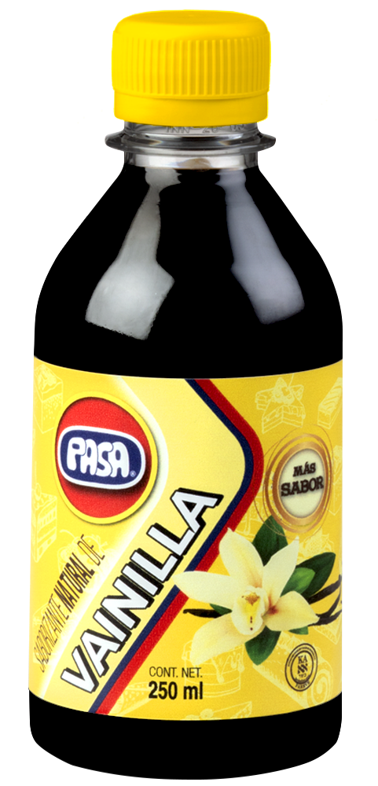
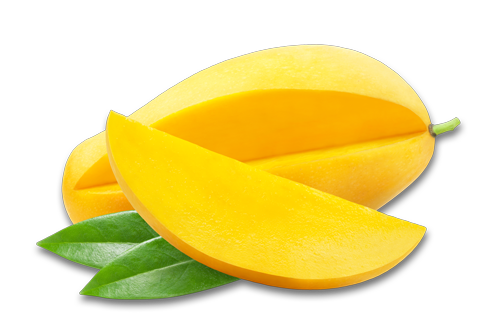

17 productos en cuatro familias. Toca cualquier producto para ver su detalle, presentaciones y usos recomendados.
El sabor más popular del mundo, originario de México. De uso doméstico a presentaciones industriales de 20 litros.
Elaboradas con ingredientes premium en tres versiones: natural, light con 45% menos sal y picante con chile habanero.
El secreto detrás de los mejores platillos: salsas negras, sabor ostión, tipo inglesa y jugo sazonador bajo en sodio.
Sazonadores gourmet para marinar y realzar ensaladas, carnes y pescados. Seis perfiles de sabor en botella de 355 ml.
Encuéntranos en Walmart, Sam's Club, La Comer, Soriana, Chedraui y las principales cadenas del país.
Ver puntos de ventaToca la imagen para acercar